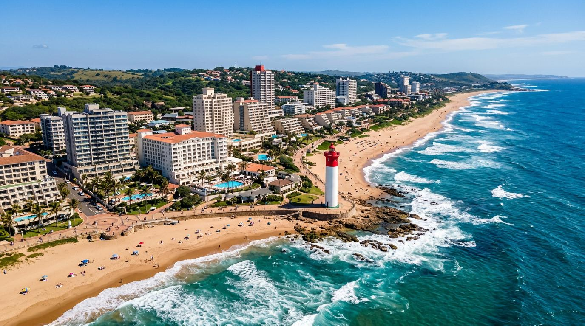
From golden beaches to wildlife safaris, world-class golf to cultural landmarks — adventure awaits near Hampshire Hotel.
Everything from wildlife parks to championship golf courses to the historic King Shaka Route.
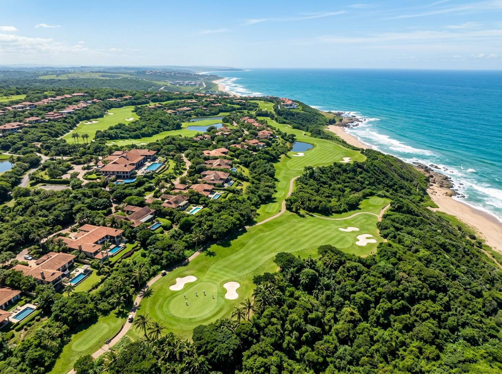
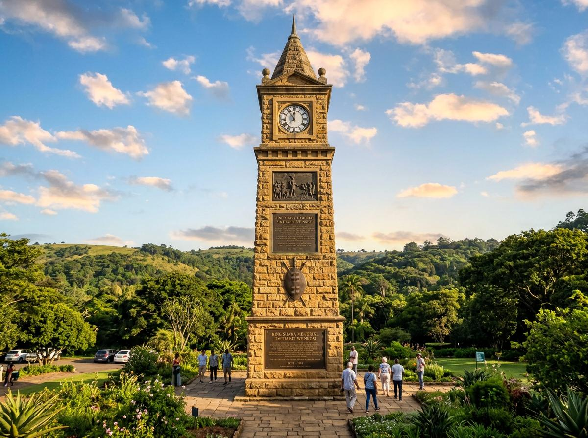
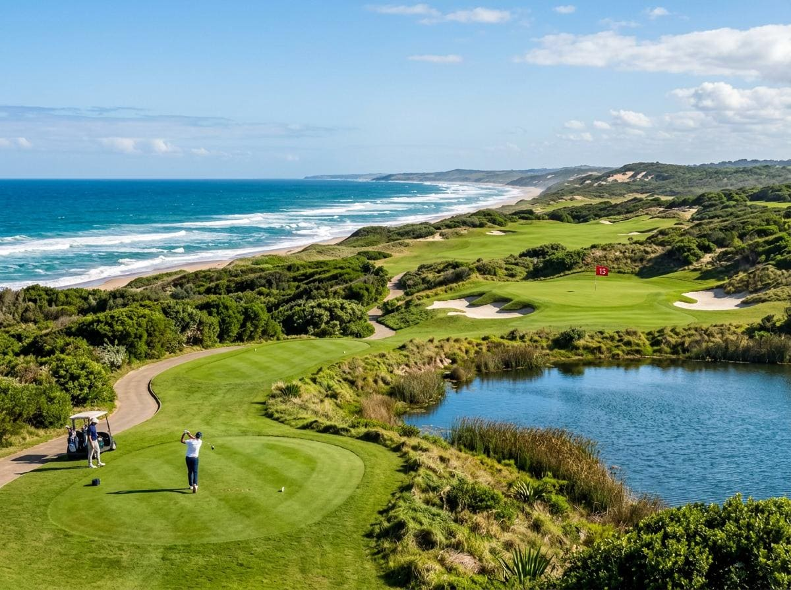
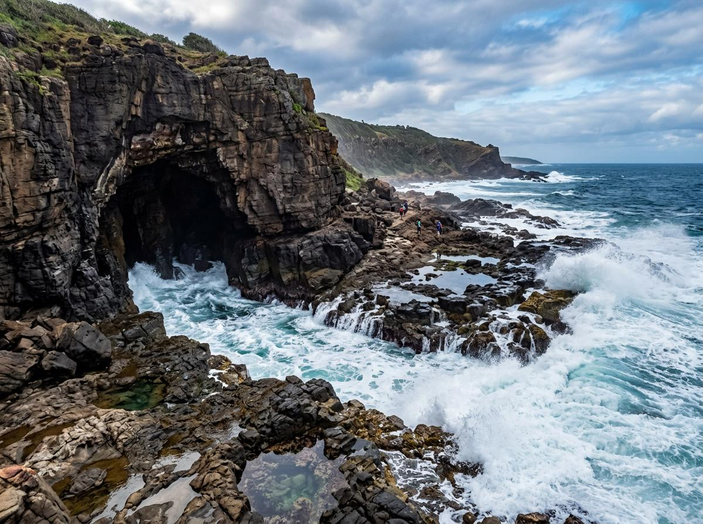
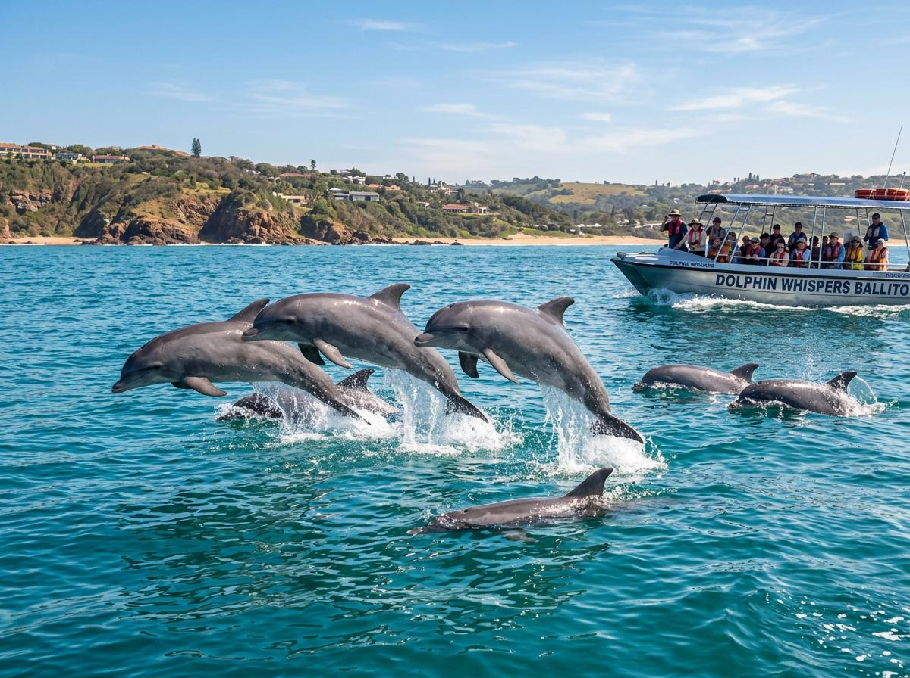
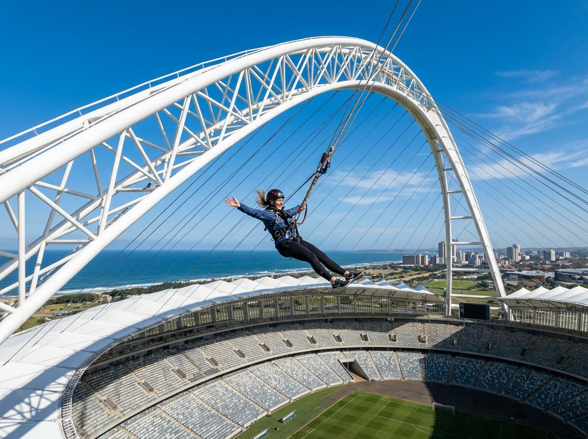
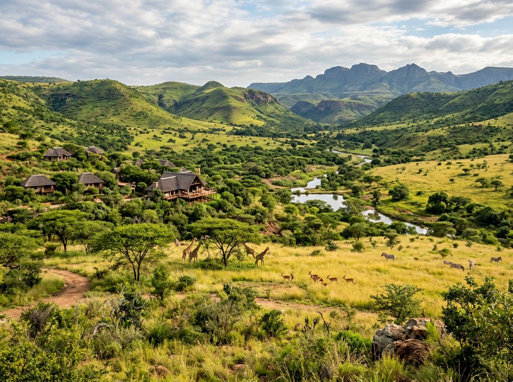
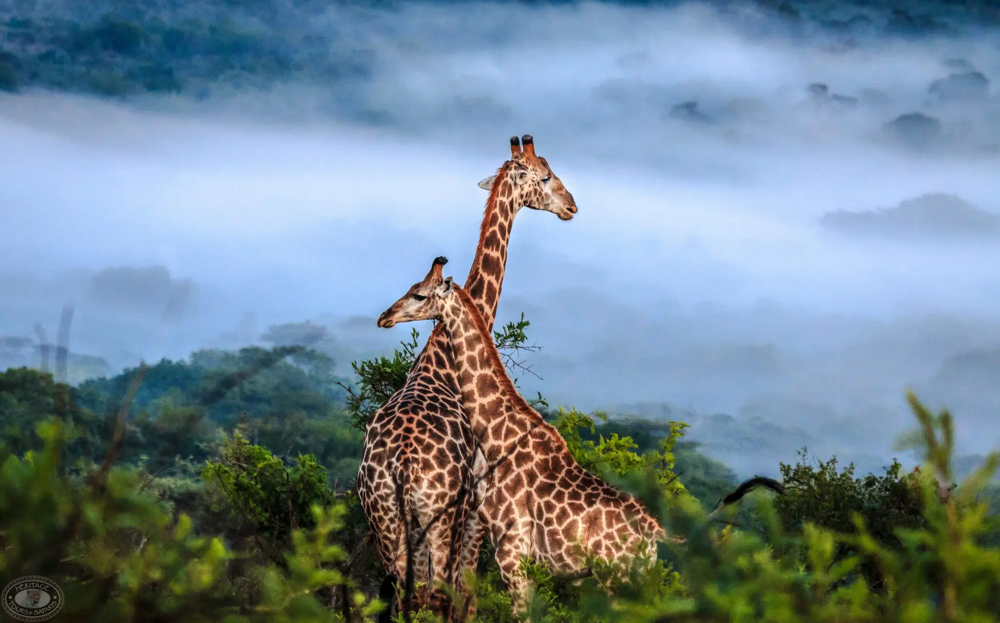
The Dolphin Coast offers something for everyone — from thrill-seekers to nature lovers.
7.7km — Explore scenic hiking and mountain biking trails through coastal forests.
6.4km — Discover marine life in the sheltered tidal pools of the North Coast.
7.8km — Deep-sea fishing excursions for unforgettable ocean adventures.
6.4km — See the coastline from above with a thrilling microlight flight.
9.3km — Get up close with fascinating reptiles and learn about conservation.
14km — Visit this wildlife sanctuary home to over 9,000 crocodiles.
25km — Artisan chocolate tasting in a beautiful garden setting.
5km — Craft brewery offering unique local beers and guided tours.
6km — Family fun with bike trails, a brewery, and outdoor activities.

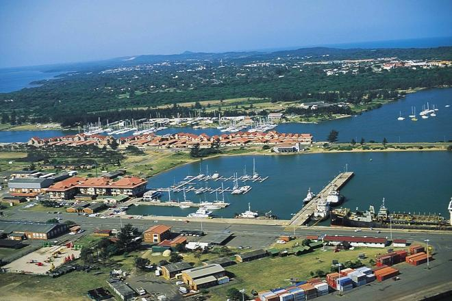
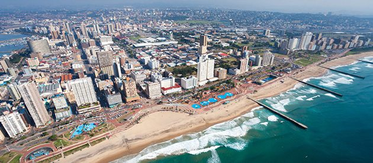
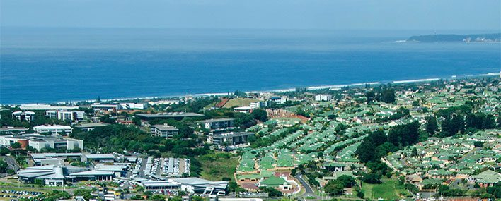
½ km
1km
3km
23.7km
1.2km
18.7km
45km
44km
54km
King Shaka International Airport
10km
Virginia Airport
10km
Ballito Taxi
5km
Compensation Railway
7km